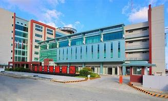

Govt. Polytechnic College, Cherthala is the first Professional Engineering Institution of excellence under Government Sector in Alappuzha district of Kerala state. Govt. Polytechnic College, Cherthala is a premier Technical Education center in Kerala targeting the rural people. Even though the institution located in the heart of Cherthala town, beside the national highway, it is surrounded by a number of villages, which are backward. This institution serves as a Nodal Polytechnic for the other Polytechnic Colleges in the Alappuzha District
